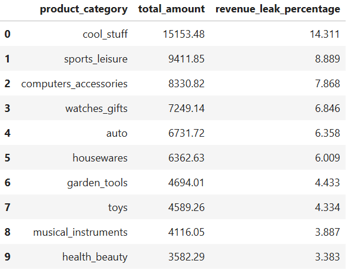
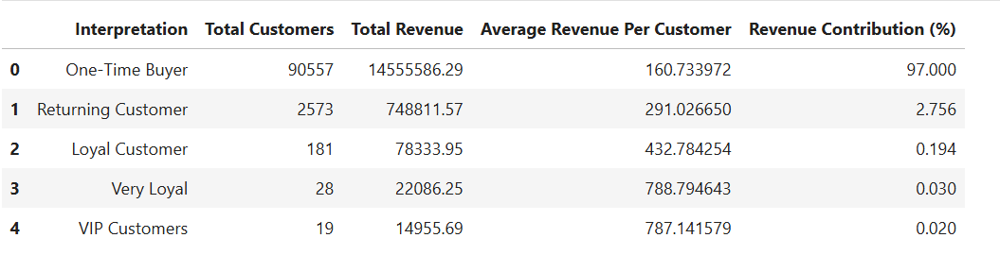

Analyzing customer behavior and revenue patterns to uncover business insights and growth opportunities in a Brazilian e-commerce marketplace.
This project analyzes customer behavior and revenue patterns for a Brazilian e-commerce marketplace using historical order data. The goal is to identify key customer segments, understand purchase frequency and recency, and evaluate the drivers of revenue and regional growth. Insights from this analysis highlight opportunities for improving customer retention and long-term business value.
Image Source: Google Images
Date Source: Kaggle
This project analyzes the revenue leakage, customer segmentation (RFM) and regional performance with growth trends for a Brazilian e-commerce marketplace using historical order data. The goal is to identify the source of revenue leakage, key customer segments, understand purchase frequency and recency, and evaluate the drivers of revenue and regional growth. Insights from this analysis highlight opportunities for improving customer retention and long-term business value.
The image below represents the schema for the database:
Image Source: Google Images
(Ctrl+Click / Cmd+Click)
delivered: 96,478 shipped: 1,107 canceled: 625 unavailable: 609invoiced: 314 processing: 301 created: 5 approved: 2 There are two layers for the canceled orders, with-items and without-items.
Out of 625 canceled orders, 461 had items (hard revenue loss), and 164 were canceled before item-level data was recorded (soft revenue loss).

product categories follows a linear relationship where higher cancellations lead to higher revenue loss with just one exception, i.e. cool_stuff category, it has the highest revenue loss R$ 15,153.48 despite low cancellations (16), sports_leisure faces the highest number of order cancellation of 51 and has a revenue loss of R$ 9,411.85.On average, customers take approximately 248 days to place their second purchase, indicating a long repurchase cycle.
Out of 96,478 customers, only 18,741 return within 1–100 days, while the majority (45,240 customers) make a second purchase between 100–300 days.
A significant portion of customers show very long gaps between purchases, with 25,406 customers returning after 300–500 days, and 7,091 customers taking more than 500 days.
Overall, repeat purchasing behavior is heavily concentrated in the 100–300 day window, suggesting low short-term retention and a slow repeat-purchase cycle.
5 different segements:One-Time Buyer: 1 orderReturning Customer: 2 ordersLoyal Customer: 3 ordersVery Loyal Customer: 4 ordersVIP Customers: 5 or more ordersOne-Time Buyer domniates the customer base accounting for 96.947%, a total of 90,557 customers.Returning (2.756% or 2,573 customers) and Loyal (0.194% or 181 customers) form a much smaller but strategically important segment.Very Loyal (0.030% or 28 customers) and VIP (0.020% or 19) customers represent a very small fraction but are likely to contribute disproportionately higher lifetime value.heavily relies on the One-Time Buyer, with a total of 90,557 customers, a total revenue of R$ 14.55 M, with an average revenue of R$ 160.73 per customer, and a revenue contribution of 97.00 %.value of the customer increases as the customer counts for their second purchase starts decreasing, although, revenue contribution (%) for the rest of the segments except One-Time Buyer is < 2.7%, value wise, the company earns on an average of R$ 291.02 to R$ 787.14 per customer in other remaining 4 segments while the average revenue per customer for One-Time Buyer is just R$ 160.73.
Out of 27 states, São Paulo is the highest revenue-generating state, contributing R$ 5,773,869.02 (37.44% of total revenue).
Roraima is the lowest revenue-generating state, contributing R$ 9,039.52 (0.06% of total revenue).
São Paulo has the highest volume (40,519 orders or 42.0%) for orders and is also the highest revenue generating state.
Roraima has the lowest volume (41 orders or 0.04%) for orders and is also the lowest revenue generating state.
The Volume of Order and Revenue Generation has a linear relationship for majority of the states.
Paraíba state has the highest AOV of 1.68x but is the lowest revenue generating state, contributing 0.89% in the total revenue, with the lowest number of orders contribution 0.53% in the total order-volume.São Paulo state has the lowest AOV of 0.89x but is the highest revenue generating state, with a contribution of 37.44%, in the total revenue, with the highest number of orders contribution 42.00%, in the total order-volume.AOV and Order volume shows an inverse relationship, several states exhibit high AOV but low order volume, indicating premium but niche markets.revenue growth is primarily driven by increasing order volume rather than price effects.São Paulo consistently leads across time with the highest order volume of 46,448.00 and shows the steepest growth trajectory, significantly outperforming other states.São Paulo is also the highest revenue-generating state of $R5,769,703.15, reinforcing its role as the primary growth engine for the business.Programming and analysis:
Data visualization:
Environment and tools:
├── data/
│ └── raw/ # Raw CSV files used to create the e-commerce database
├── docs/ # Exported HTML notebooks for GitHub viewing
├── notebooks/ # Jupyter notebooks with analysis, interactive visuals, and insights
├── plots/ # Reusable Python functions for Plotly visualizations
├── plot_html/ # Interactive Plotly charts saved as HTML
├── sql/ # SQL queries used for metric calculations
│ ├── 02_Revenue_Leakage_Analysis/
│ ├── 03_Customer_Segmentation_(RFM_Analysis)/
│ └── 04_Regional_Performance_with_Growth_Trends/
├── src/ # Python modules executing SQL and computing metrics
│ ├── revenue_leakage/
│ ├── rfm_analysis/
│ └── regional_performance/
└── utils/ # Helper and utility functions
{kind=link}